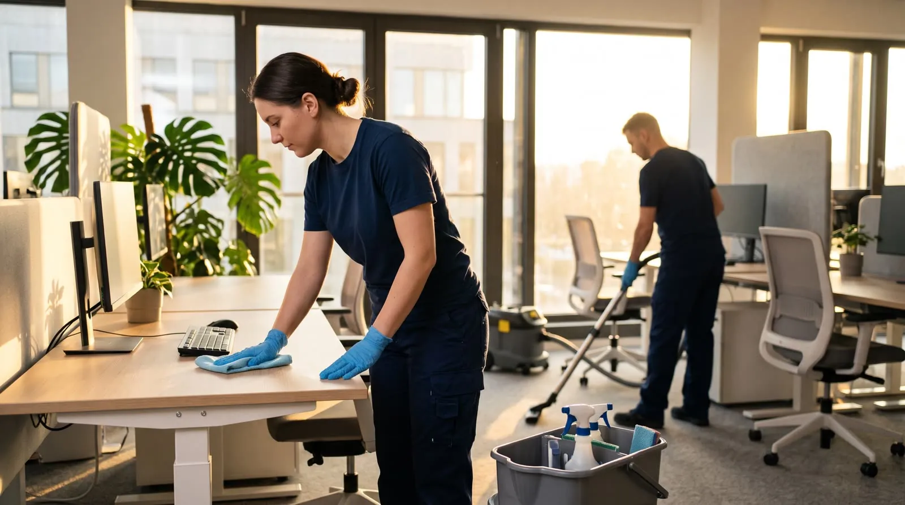

Kempten ist der wirtschaftliche Mittelpunkt des Allgäus – mit Verwaltung, Hochschule, Klinikum, Einzelhandel und produzierendem Gewerbe auf engem Raum. Entsprechend unterschiedlich sind die Anforderungen an eine Gebäudereinigung. Wir stimmen den Reinigungsplan auf Ihren Objekttyp ab statt auf ein Standardpaket.

Kempten ist kreisfrei, zugleich sitzt hier das Landratsamt Oberallgäu – die Stadt zieht Betriebe und Kundschaft weit über die eigene Grenze hinaus an. Deshalb endet unser Einsatzgebiet nicht am Ortsschild: Wir fahren das gesamte Stadtgebiet an und dazu die Gemeinden im Umkreis von etwa zehn Kilometern. Für Sie heißt das planbare Anfahrtszeiten und die Möglichkeit, mehrere Standorte über einen Ansprechpartner abzuwickeln.
Ein Großraumbüro, eine Praxis und eine Produktionshalle haben kaum eine Anforderung gemeinsam – außer, dass Standardreinigung bei allen dreien zu kurz greift. Wir gehen deshalb vom Objekt aus und nicht vom Leistungskatalog.
Arbeitsplätze, Besprechungsräume, Küche und Sanitär. Bildschirme, Tastaturen und Aktenablagen bleiben unangetastet – gereinigt wird um die Arbeitsunterlagen herum, nicht durch sie hindurch. Meist vor Arbeitsbeginn oder nach Feierabend.
Wartezimmer, Behandlungsräume und Sanitärbereiche mit getrennten Reinigungsutensilien und dokumentierten Intervallen. Kontaktflächen wie Türgriffe, Tresen und Handläufe behandeln wir bei jedem Durchgang gesondert.
Verkaufsflächen, Schaufenster und Eingangsbereiche in der Kemptener Innenstadt. Gereinigt wird vor Ladenöffnung, damit der erste Eindruck stimmt, bevor der erste Kunde kommt.
Treppenhäuser, Aufzüge, Kellergänge, Waschküchen und Außenanlagen. Feste Turnusse und ein Ansprechpartner für alle Objekte einer Verwaltung – ohne dass Sie je Einheit einzeln koordinieren müssen.
Sozialräume, Umkleiden, Bürotrakte und Verkehrswege in Hallen. Wir arbeiten im Schichtrhythmus Ihres Betriebs und stimmen ab, welche Bereiche wann zugänglich sind.
Kempten ist Hochschulstandort – rund um Seminar- und Schulungsräume gilt: hohe Frequenz, kurze Pausen, enge Zeitfenster. Wir reinigen zwischen den Belegungen statt mittendrin.
Vier Leistungen bilden den Kern. Sie lassen sich einzeln beauftragen oder zu einem laufenden Turnus kombinieren – je nachdem, ob Sie dauerhafte Betreuung oder eine einmalige Aufarbeitung brauchen.
Kempten liegt am Alpenrand, und das merkt man am Schmutzeintrag. Ein Turnus, der im Juli passt, ist im Januar zu dünn. Wir passen Intervalle und Schwerpunkte deshalb saisonal an, statt zwölf Monate lang dasselbe abzuarbeiten.
Von November bis März tragen Schuhe Split, Streusalz und Schmelzwasser in die Gebäude. Das greift Hartböden an und hinterlässt weiße Ränder, die sich mit der Zeit festsetzen. In dieser Phase verstärken wir Eingangsbereiche und Verkehrswege, kontrollieren Sauberlaufzonen häufiger und arbeiten Salzränder gezielt ab, bevor sie den Belag dauerhaft schädigen.
Im Allgäu ist die Pollenbelastung ab April deutlich spürbar – auf Fensterbänken, Glasflächen und Lüftungsauslässen setzt sich ein gelblicher Film ab, der bei Regen Schlieren zieht. Das Frühjahr ist deshalb der sinnvollste Zeitpunkt für den ersten Fensterdurchgang des Jahres und für die Grundreinigung nach dem Winter.
Nasses Laub an Eingängen ist nicht nur unschön, sondern eine Rutschgefahr – und mit der frühen Dämmerung fällt sie schlechter auf. Wir ziehen im Herbst die Reinigung der Außen- und Eingangsbereiche vor und stimmen Beleuchtungssituation und Reinigungszeit so ab, dass Ihre Zugänge auch nachmittags sicher begehbar sind.
Die häufigsten Beschwerden über Reinigungsfirmen drehen sich nicht um Reinigungsmittel, sondern um Verbindlichkeit. Genau da setzen wir an.
Vor dem ersten Einsatz halten wir fest, welche Fläche in welchem Intervall wie behandelt wird – Raum für Raum. Damit ist im Streitfall nachlesbar, was vereinbart war, statt dass Erwartung gegen Erinnerung steht.
Wer Ihr Gebäude kennt, arbeitet schneller und übersieht weniger. Wir setzen dieselben Kräfte wiederholt in denselben Objekten ein – auch weil Schlüsselverwaltung und Alarmanlagen keine Sache für wechselndes Personal sind.
Sie rufen bei einer Person an, nicht bei einer Hotline. Wenn kurzfristig etwas dazwischenkommt – eine Veranstaltung, ein Wasserschaden, ein zusätzlicher Termin – lässt sich das in einem Anruf klären.
Ein funktionierender Reinigungsvertrag fällt im Alltag nicht auf – und genau das ist der Punkt.
Weil wir das Stadtgebiet und den 10-Kilometer-Ring ohnehin regelmäßig anfahren, sind Zusatztermine und kurzfristige Einsätze realistisch planbar statt Glückssache.
Das Leistungsverzeichnis liegt Ihnen vor. Sie sehen, was zum Turnus gehört und was als Zusatzleistung berechnet wird – keine Überraschungen auf der Rechnung.
Schlüssel und Zugangscodes werden dokumentiert übergeben und sind einer festen Person zugeordnet. Bei Personalwechsel erfahren Sie das, bevor jemand vor Ihrer Tür steht.
Früh, abends oder am Wochenende – Reinigung soll Ihren Betrieb nicht unterbrechen. Der Zeitrahmen wird vertraglich festgelegt, nicht von Woche zu Woche neu ausgehandelt.
Direkte Nummer, direkte Antwort. Auf Anfragen reagieren wir innerhalb von 24 Stunden – auch dann, wenn es um eine Reklamation geht.
Wer mehrere Objekte in und um Kempten betreut, bekommt sie gebündelt abgerechnet – mit Aufschlüsselung je Standort für Ihre Buchhaltung.
Die Fragen, die uns Interessenten aus Kempten am häufigsten vorab stellen.
Im gesamten Stadtgebiet – von der Altstadt und dem Rathausplatz über St. Mang, Kottern und Heiligkreuz bis Thingers, Lenzfried, Hirschdorf und Ursulasried. Dazu der Umkreis von rund zehn Kilometern ins Oberallgäu.
Ja. In Büros und Kanzleien reinigen wir üblicherweise vor Arbeitsbeginn oder nach Feierabend, im Einzelhandel vor Ladenöffnung. Der Zeitrahmen wird beim Ortstermin festgelegt.
Wir melden uns innerhalb von 24 Stunden. Bei größeren Objekten sehen wir uns die Flächen vorher kostenlos vor Ort an – ein Angebot ohne Besichtigung wäre bei Gewerbeflächen wenig belastbar.
Ja – etwa Grundreinigung nach einem Umbau, vor einem Mieterwechsel oder als jährliche Auffrischung. Ein laufender Vertrag ist dafür keine Voraussetzung.
Reinigungsmittel und Geräte bringen wir mit. Verbrauchsmaterial wie Seife, Papierhandtücher oder Toilettenpapier können wir auf Wunsch mitliefern und nachfüllen – das wird separat vereinbart.
Melden Sie es direkt bei Ihrem Ansprechpartner. Wir sehen uns die Stelle an und arbeiten nach – und prüfen, ob der Turnus für diesen Bereich zu knapp bemessen war.
Von der Anfrage bis zum Angebot vergehen in der Regel keine zwei Tage.
Fünf kurze Fragen zu Objekt, Fläche und gewünschtem Intervall. Das dauert keine zwei Minuten und gibt uns die Grundlage für ein realistisches Angebot.
Wir sehen uns die Flächen an, klären Zugänge, Zeitfenster und Besonderheiten – kostenlos und unverbindlich.
Sie erhalten ein Festpreisangebot samt schriftlichem Leistungsverzeichnis. Was drinsteht, wird gemacht – und was nicht drinsteht, wird nicht berechnet.
„Ich habe Beqiri Clean für eine Bauendreinigung beauftragt und war mit der Leistung sehr zufrieden. Das Team hat sauber gearbeitet, war pünktlich und ist auf unsere Wünsche eingegangen. Klare Empfehlung!"
„Bei unserer alten Reinigung war es immer schwierig, jemanden zu erreichen oder Dinge abzusprechen. Bei Beqiri Clean ist das komplett anders. Man bekommt schnell eine Antwort und alles läuft unkompliziert. Dazu noch saubere Arbeit, sind echt zufrieden."
Beantworten Sie ein paar kurze Fragen zu Ihrem Objekt in Kempten – wir erstellen Ihnen daraufhin Ihr individuelles Reinigungsangebot.